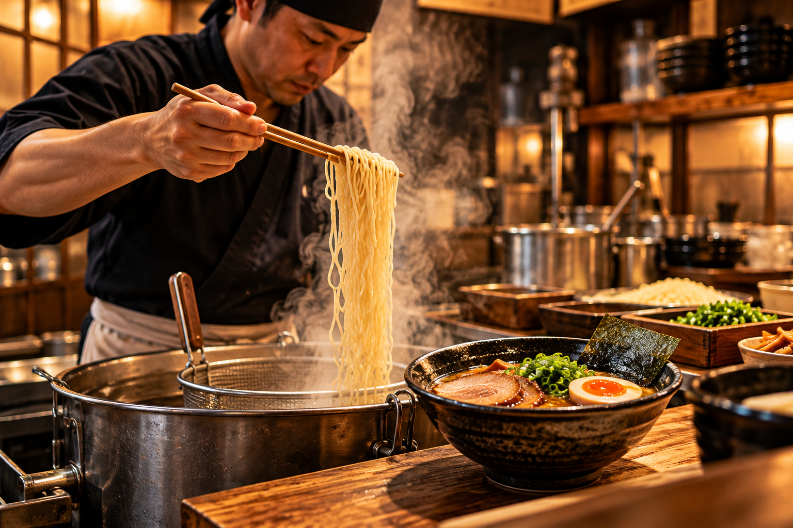
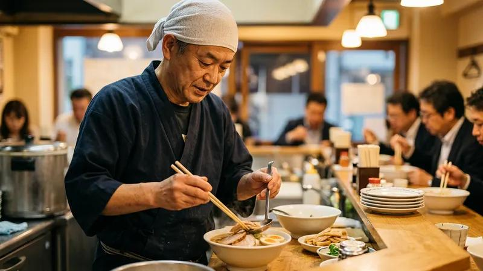
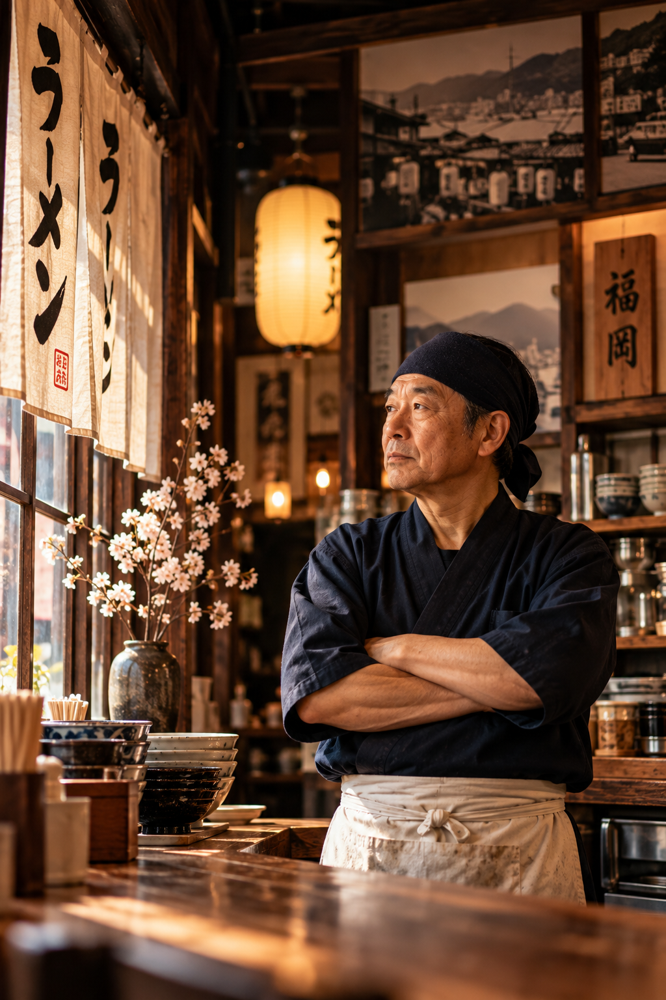
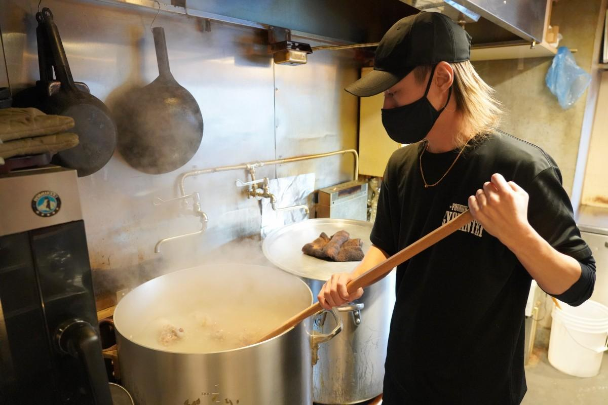
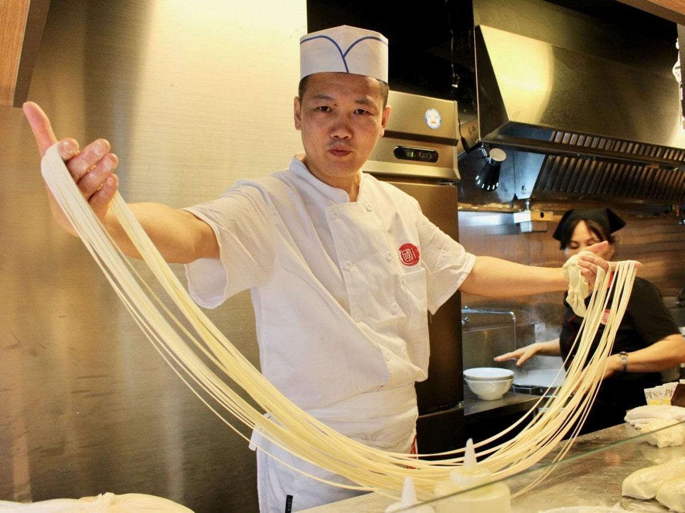
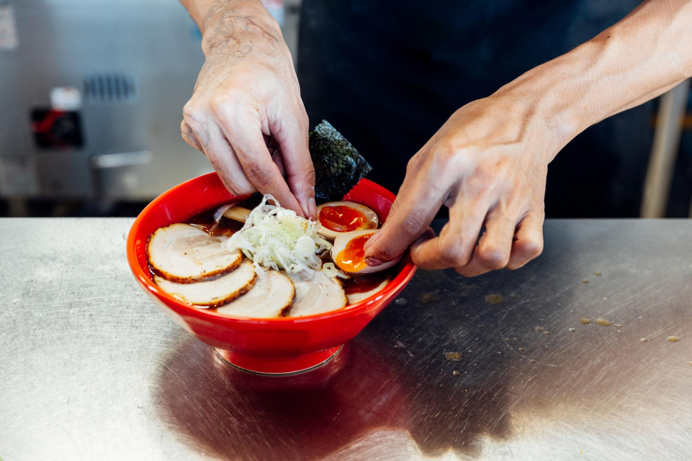
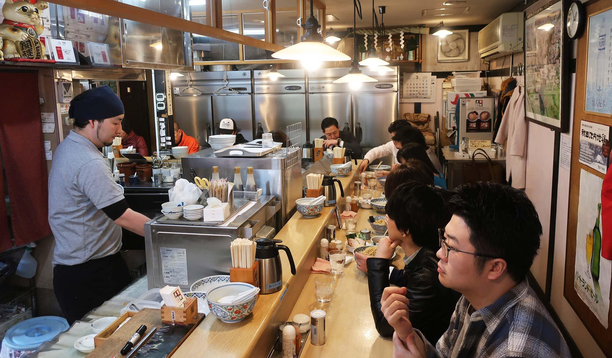
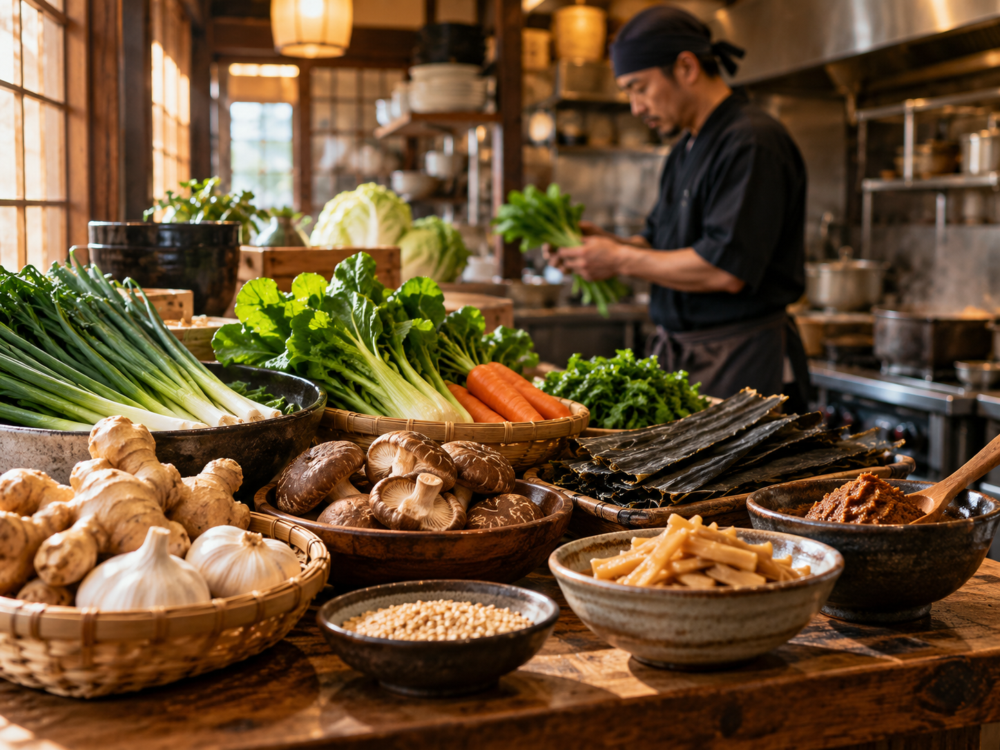
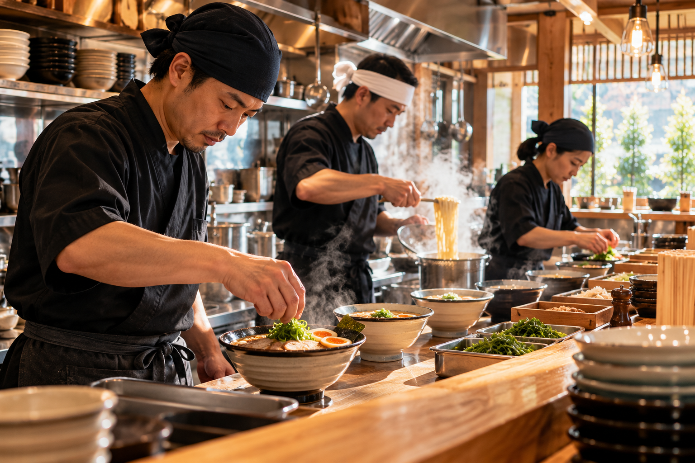
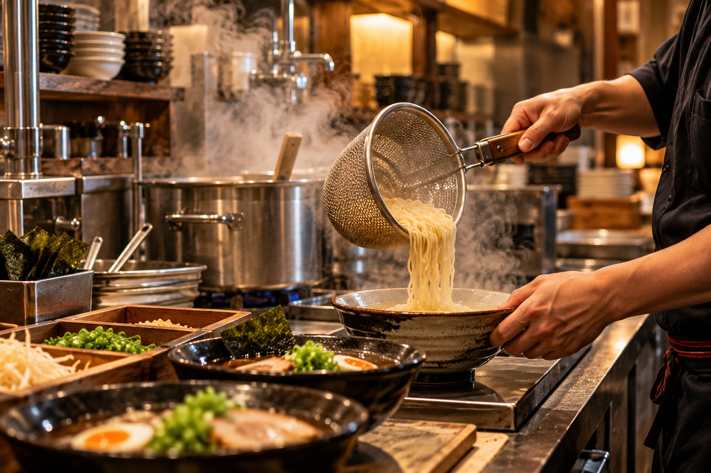

What Makes Our Ramen Special
Long-simmered broth, carefully timed noodles, and toppings balanced for a complete, comforting bowl.

The lifelong devotion, patient science, and profound human warmth behind every single bowl we serve.
Growing up in the port city of Fukuoka, Kenjiro Sato fell in love with the steam and camaraderie of evening yatai food stalls. What began as an after-school fascination evolved into a grueling twelve-year apprenticeship under master broth-boilers across Japan.
"Ramen is deceptively humble," Chef Sato reflects. "It is casual food, yet it demands absolute scientific rigor. If your rolling boil fluctuates by three degrees, your broth clouds in the wrong direction. If your flour mill's humidity shifts by two percent, your noodle's bounce is altered. You must respect the craft with all your heart."
"When a guest drinks the very last drop from the bottom of their bowl and smiles, our entire day's labor is rewarded."
— Master Kenjiro Sato
True ramen harmony is reached when broth, noodle, and tare achieve absolute balance.

Simmered for 18 continuous hours without shortcuts or artificial thickeners. We double-blanch Berkshire pork bones and steep cold Hidaka kombu to release rich natural collagen and pure umami.

Cut fresh every morning in our climate-controlled noodle room using 100% certified Hokkaido wheat. We calibrate thickness, wave pattern, and alkaline hydration to match each broth style precisely.

The soul seasoning of every bowl. Our shoyu tare is derived from a 200-year-old wooden barrel cedar brewery in Shizuoka, seasoned with dried bonito, sake, and roasted aromatic oils.
From an 8-seat midnight pop-up to a celebrated neighborhood institution.
Chef Kenjiro launches an intimate 8-stool pop-up serving just 40 bowls a night. Word spreads rapidly across food critics and night shift culinary workers.
NAMI opens its doors at 123 Artisan Way, introducing an open-kitchen cedar counter and expanding into evening izakaya small plates and sake pairings.
Responding to overwhelming demand, we opened our second location on Ramen Row, complete with our climate-controlled wheat milling and dough maturation lab.
Recognized by the Michelin Guide for uncompromising quality, depth of flavor, and genuine omotenashi hospitality at an accessible value.
Still boiling our pots with the exact same passion, patience, and warmth as day one. Every bowl served remains personal.

Great cooking begins long before the stockpots are fired. We work exclusively with family farms and artisan suppliers who share our dedication to environmental stewardship.
Every bowl is built on patience, balance, and a respect for the craft.

Long-simmered broth, carefully timed noodles, and toppings balanced for a complete, comforting bowl.

We select quality produce, aromatic seasonings, and thoughtfully sourced ingredients for depth and freshness.

Our kitchen team brings discipline, curiosity, and genuine hospitality to every service.

We prepare broth with care, cook noodles to order, and finish each bowl moments before it reaches your table.
The story is in every slurp. Reserve your counter seat or explore our full menu of handcrafted dishes.